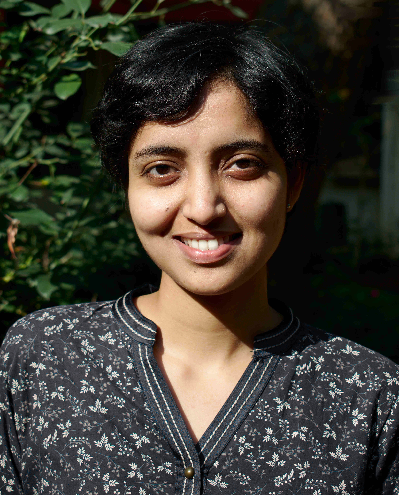

Neha Karanjkar
|  | Hi. I am an Assistant Professor in the School of Mathematics and Computer Sciences at the Indian Institute of Technology Goa. I received my M.Tech and Ph.D degrees from the Electrical Engineering department at IIT Bombay in 2017 and was a post-doctoral fellow at the Robert Bosch Centre for Cyber-Physical Systems, IISc Bangalore between 2017-2018. |
Research Interests
Modeling, Simulation and Optimization of Discrete-event Systems
Application Areas:
Computer Architecture, Embedded Systems
Simulation of Smart-City and Industrial Internet-of-Things (IoT)
Contact
nehak [at] iitgoa [dot] ac [dot] in
School of Mathematics and Computer Sciences,Indian Institute of Technology Goa,
Farmagudi, Ponda, GOA 403401